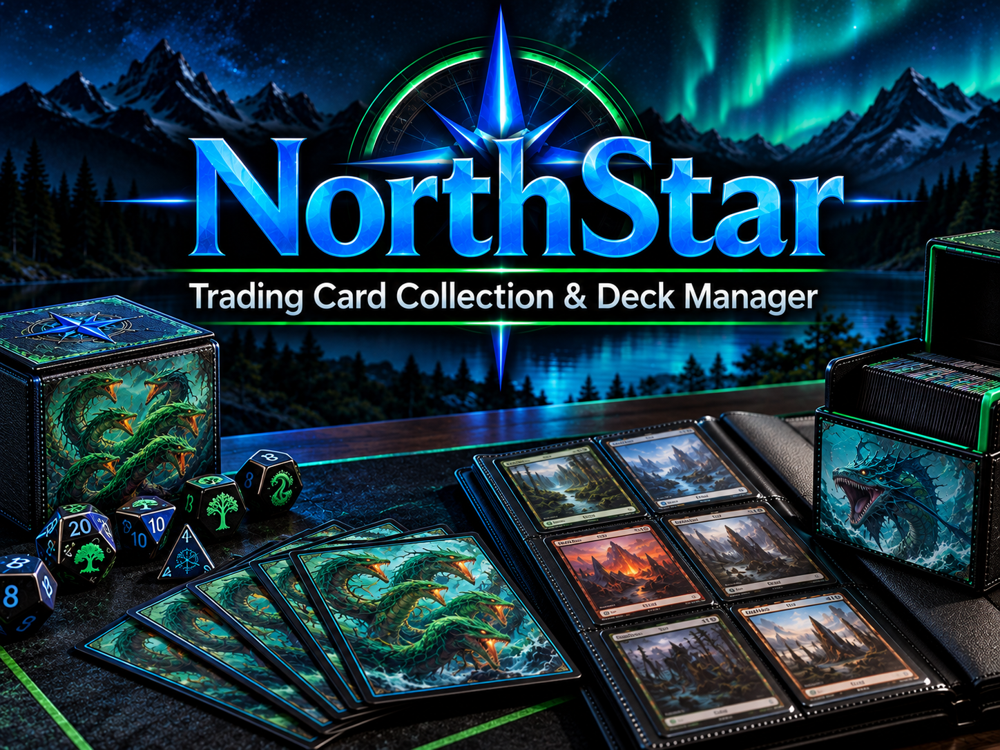

Welcome to NorthStar
NorthStar Trading Card Collection & Deck Manager is designed for Magic: The Gathering players and collectors who want one place to organize their cards, browse card information, and manage their decks.
Created by Jesse Sherk, NorthStar makes it easier to keep track of the cards you own, where they are located, and which decks are currently using them.
NorthStar Features
Collection
Organize and keep track of the cards in your personal collection.
Cards
Browse card information and important card details.
Decks
Build and manage decks using cards from your collection.
Wishlist
Explore the planned wishlist feature for wanted cards and future deck upgrades.
NorthStar Website Demonstration
Watch Jesse Sherk demonstrate collection entry, card research, deck assignments, and navigation through all seven pages.
Download the demonstration video (MP4)
The demonstration includes spoken narration. Collections and decks save in the current browser; accounts and cloud syncing are not implemented. Wishlist saving is planned.